All are warmly welcome
Led by MahAcharya Shri Sourabh J. Sarkar
A message offered on Guru Purnima 2026 — in three languages. Use EN · हिं · বাং above to switch.
Karmyog Vātika is a club for lifelong learning — a garden of shared practice where mindfulness, community, and the rhythms of nature meet. This Guru Purnima, the community gathered for meditation, dharma katha, a yogic performance and a shared meal.
The evening was led by MahAcharya Shri Sourabh J. Sarkar, with special yogic performances by Acharya Rhea and Acharya Pritam. Relive the evening below in photos and the full recording.
A gentle procession awakening awareness of nature — settling the mind before meditation.
Guided full-moon meditation and dharma katha, led by MahAcharya Shri Sourabh J. Sarkar.
Live yogic performance by Acharya Rhea and Acharya Pritam.
An evening meal shared together, offered to every attendee.
Tap any photo to view as slides — full image, one at a time.
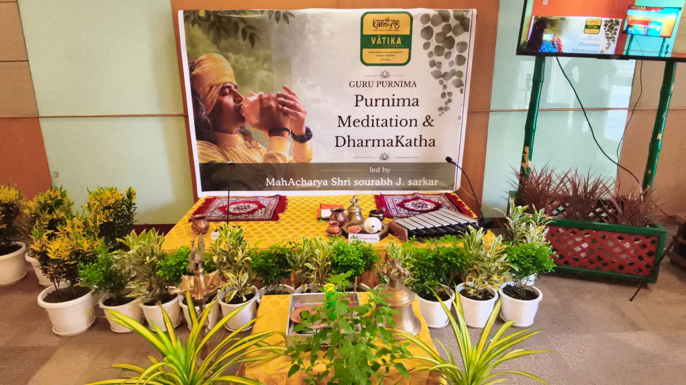
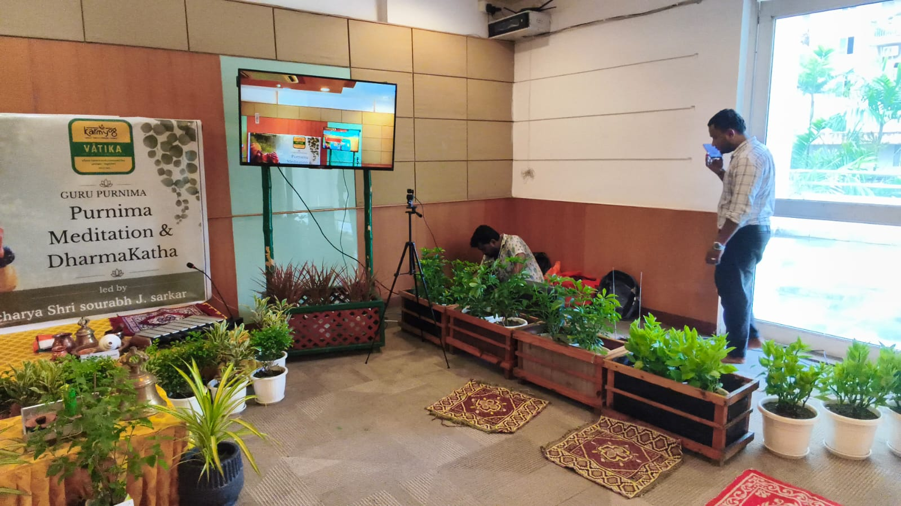
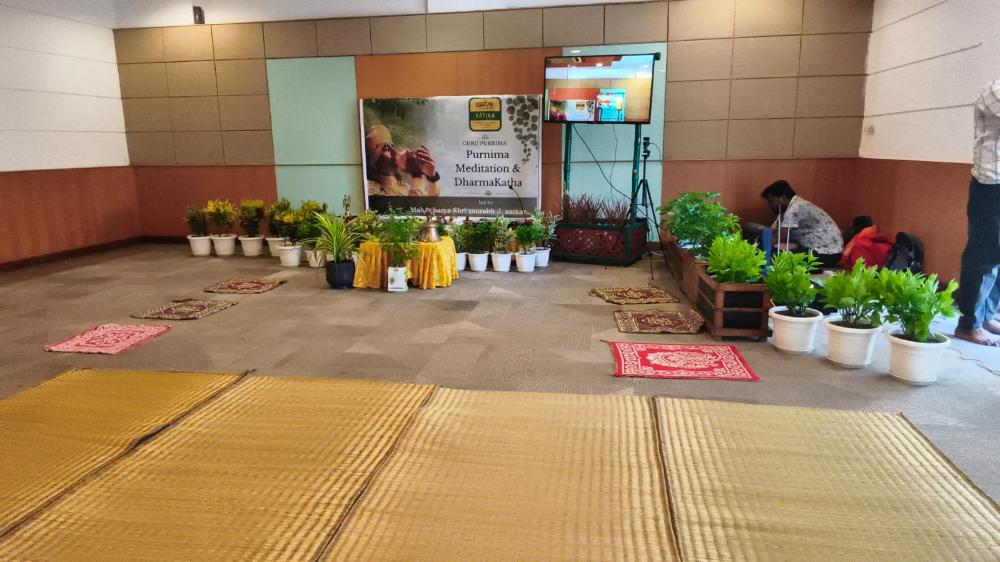
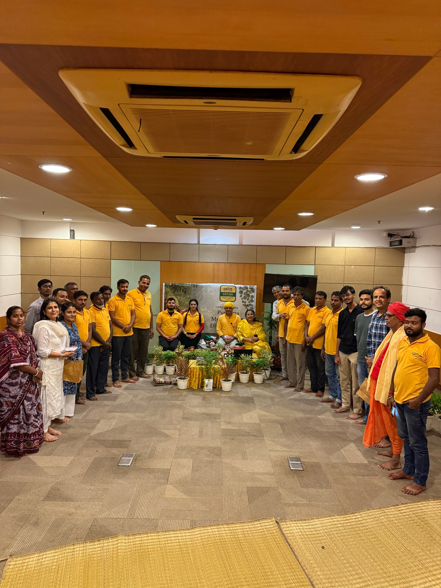
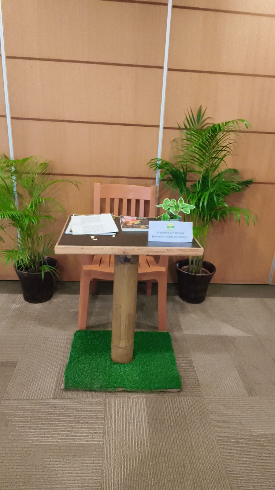
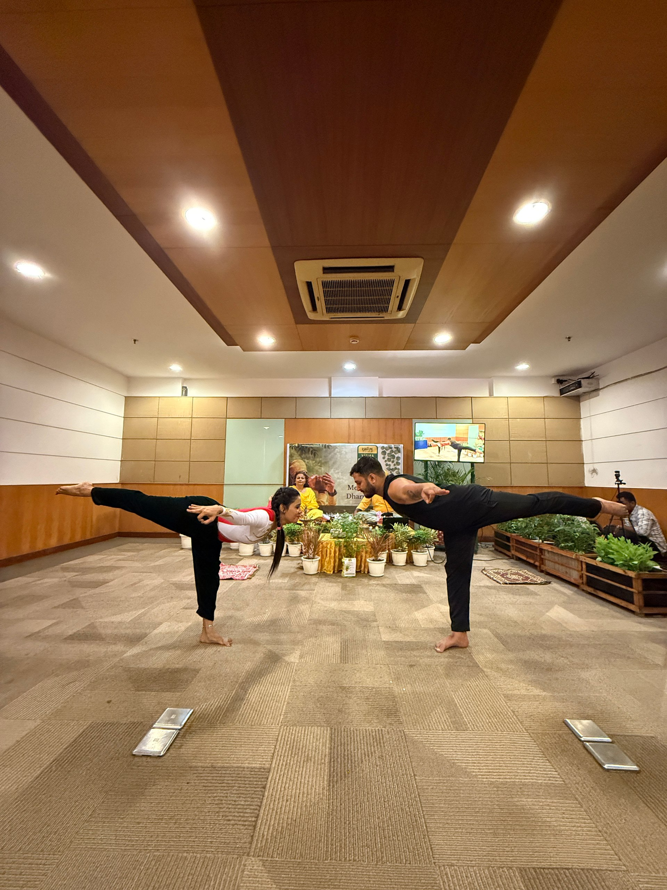
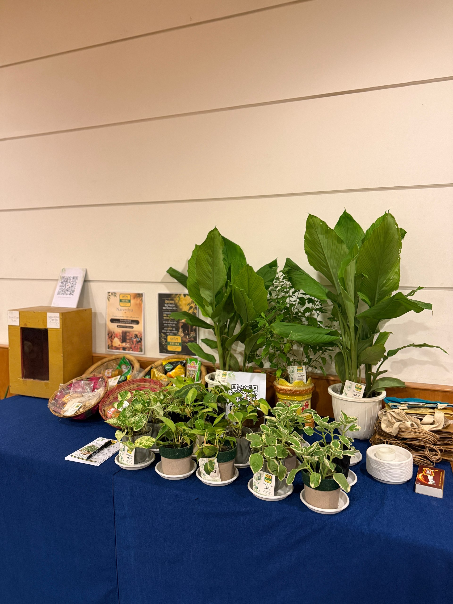
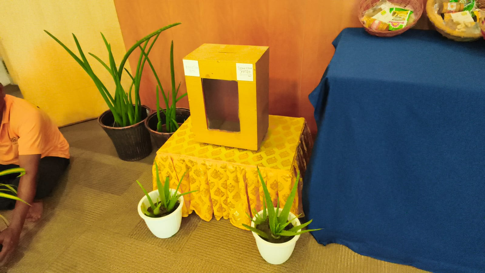
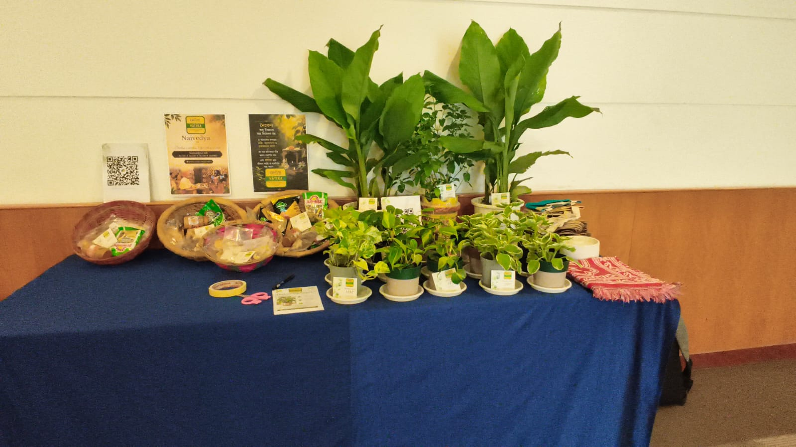
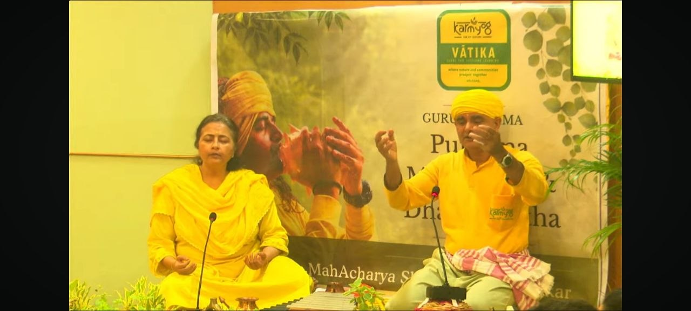
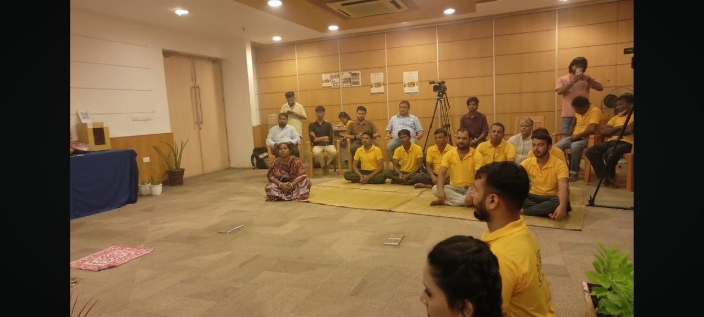
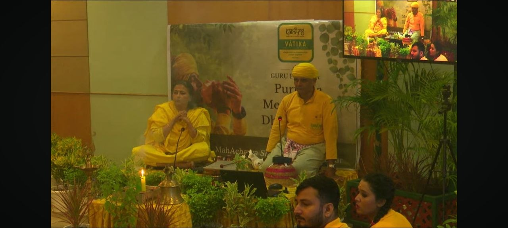
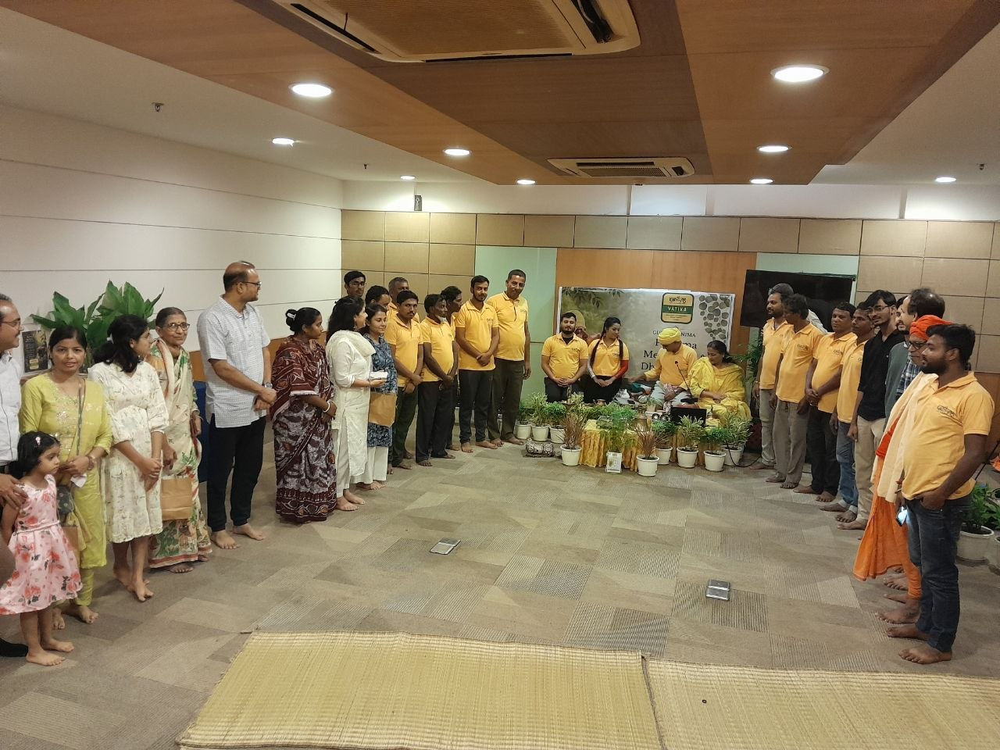
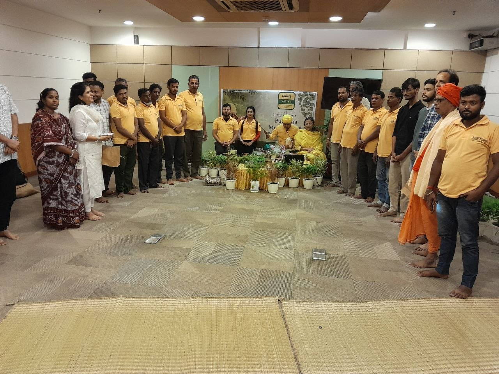
The complete session — meditation, dharma katha and the yogic performance — is available to watch anytime.
This Guru Purnima gathering has concluded — thank you to everyone who sat with us in meditation and over Maha Prasad. Want to be part of the next one at Karmyog Vātika?
Reach out on the numbers alongside to hear about upcoming gatherings, meditations and dharma katha sessions at Karmyog Vātika.